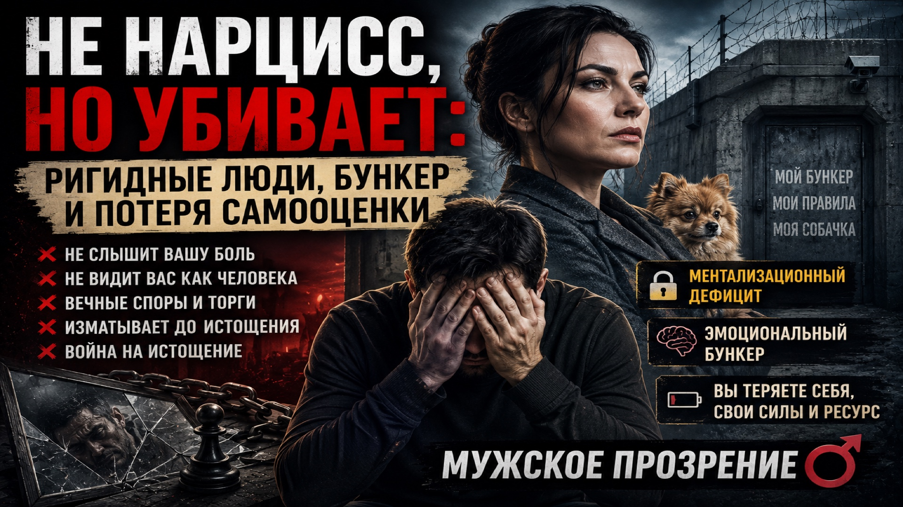

13 🔥 «Не нарцисс, но убивает: ригидные люди, бункер и потеря самооценк軶

Описание видео¶
Парни, привет. С вами Алекс.
Сегодня у меня родился новый термин — «[[эмоционально-ригидный рационализатор]]» (сокращённо ЭРР, или, как я его называю, «ригидный долбоёб»). Это не клинический нарцисс, не садист, но человек, общение с которым высасывает все силы, обесценивает вашу боль и заводит в тупик.
Кто это такой? Психика закостенела, как не тренированная мышца. Он не способен на валидацию ваших чувств — сначала «увидеть» вашу боль, признать её, а только потом переходить к решениям. Он сразу суёт вам решение, не услышав. Это встречается везде: в госструктурах, в бизнесе, в личных отношениях. Это форма высокого хамства, газлайтинга через протокол.
Кейс: Оксана, 39 лет, дизайнер интерьеров. Она 15 лет выживала одна — бизнес, ипотека, быт. Построила броню, которая срослась с кожей. Её модель: «Я всё сама, моя крепость, моя собачка, мои правила». Она хочет «стать настоящей женщиной», открыться, но не может сделать ни одного иррационального шага — например, купить мужчине креветки.
Она спорит часами (8 часов за 2 недели), торгуется за место встречи, превращает отношения в калькулятор выгоды. При этом она не злодейка, а заложница своей защиты. Но мужчина после травмы, который начал восстанавливаться, рискует ввязаться в бесплодные баталии, истощить ресурс и потерять самооценку.
Почему это опасно для вас?
Ригидная женщина не уничтожает вас ради удовольствия (как нарцисс), а изматывает ради сохранения своего статус-кво. Война на истощение.
Вы платите за вход своим спокойствием, сном, здоровьем. Со временем вы превращаетесь в обслуживающий персонал её «музея жизни».
Ментализационный дефицит — ключевое понятие. Ментализация — это способность видеть за поступком душу, понимать, почему человек злится, а не просто фиксировать злость. У ригидных людей эта способность не развита. Они не могут встать на вашу точку зрения, не могут рефлексировать. Это не лень, это отсутствие «мышцы».
Здоровый мужчина, который знает себе цену, считывает ригидную женщину по первому маркеру: с ней нельзя расслабиться. И уходит.
Что делать?
Отказ от ригидных женщин — это акт здоровой самозащиты. Не спасайте их, не переспорьте, не ждите, пока они снимут броню. Это не ваша работа. Вы не должны платить за их 15-летний бункер своим спокойствием.
Поддержать канал
💳 Т-Банк: 2200 7006 0692 2440 (Александр)
ригидность, эмоциональноригидныйрационализатор, ментализация, бункер, Оксана,спасательство, истощение, мужскоепрозрение, границы, валидация
Глубокое заключение¶
1. Рождение новой типологии: от НРЛ к «ригидному долбоёбу»¶
13-е видео знаменует важный этап в эволюции мышления Александра. Если первые 8–9 видео были посвящены «хищникам с большой буквы» — нарциссам, психопатам, садистам, — то теперь он спускается на уровень, где зло менее откровенно, но не менее разрушительно.
Эмоционально-ригидный рационализатор — это не клинический диагноз, а поведенческий паттерн.
Это человек, который:
- не может провести валидацию чувств (сначала выслушать и признать боль, а потом предлагать решение);
- воспринимает любую просьбу о гибкости как угрозу своей крепости;
- превращает отношения в калькулятор выгоды;
- изматывает оппонента спорами на износ, а не договаривается.
Александр подмечает важную грань: ригидные люди не получают садистского удовольствия от вашего страдания, как нарциссы. Их цель — сохранить неизменность своего мира. Они не хотят вас уничтожить, они хотят, чтобы вы перестали быть источником перемен. И это приводит к войне на истощение, которая для восстанавливающегося мужчины опасна не меньше, чем открытая агрессия.
2. Кейс Оксаны как архетип «бункерной женщины»¶
История с Оксаной — это не просто бытовая зарисовка, а архетипическая модель. Женщина, которая десятилетиями выживала одна, построила броню, сросшуюся с кожей. У неё есть собачка (замена ребёнка и партнёра), работа-крепость, жёсткий график. Она заявляет запрос на «глубину и искренность», но делает всё, чтобы эту глубину не впустить.
Александр предлагает ей иррациональный ритуал — купить мужчине креветки. Не потому, что ему нужны креветки, а потому что это символический жест уязвимости. Оксана отказывается. Её калькулятор не может просчитать выгоду, а страх перед спонтанностью перевешивает желание близости.
Глубокая мысль: ригидная женщина не способна на «[[эпистемическое доверие]]» — базовую веру в то, что другой человек может быть источником знания о мире, даже если его картина отличается. Для неё любой другой — либо угроза, либо инструмент.
3. Ментализационный дефицит как корневая проблема¶
Александр вводит термин «ментализация» — способность видеть за поступком душу. Это не просто эмпатия (почувствовать, что человек злится), а понимание почему он злится, какие у него намерения, убеждения, желания.
[[Ментализационный дефицит]] Люди с ментализационным дефицитом не могут встать на точку зрения другого. Для них существует только их собственная реальность. Это не обязательно патология, но хроническое состояние, при котором любой диалог превращается в монолог, а любое несогласие — в атаку на их крепость.
Александр делает важную оговорку: ригидность часто формируется как адаптация к хроническому стрессу, одиночеству, выживанию без опоры. Это не врождённая злоба, а [[Выученная глухота]]. Но от этого не легче — на выходе человек, с которым невозможно построить здоровые отношения.
4. Развилка из 12-го видео теперь имеет конкретное лицо¶
В предыдущем видео Александр говорил о выборе между бункером и уязвимостью. В 13-м он показывает, что бункер имеет конкретных носителей — это Оксаны и им подобные. Они не чудовища, но именно они истощают тех, кто пытается вылезти из своей заморозки.
Парадокс: человек, который сам когда-то был жертвой (одиночество, выживание), становится невольным палачом для другого. Его броня, которая спасала его, теперь ранит того, кто пытается приблизиться. И никакие уговоры не работают, потому что страх уязвимости глубже любой логики.
5. Что это видео даёт зрителю¶
Язык для описания. «[[Эмоционально-ригидный рационализатор]]» — это точное наименование для типа людей, которых многие встречали, но не могли обозначить.
Фильтр.
Если вы узнали в ком-то из своего окружения этот паттерн, вы теперь знаете: с таким человеком нельзя расслабляться, нельзя вступать в близость, нельзя пытаться его «спасти» или «переспорить».
Разрешение на уход.
Отказ от ригидных людей — это не жестокость, а самозащита. Вы не обязаны платить за их 15-летний бункер своим здоровьем.
Продолжение темы «развилки». Выбор оставаться открытым не означает, что вы должны терпеть любое поведение. Можно быть уязвимым и одновременно жёстко фильтровать — это не противоречие.
Итог¶
13-е видео — это мостик между абстрактной психопатологией и реальной жизнью. Александр показывает, что опасность не всегда носит маску монстра. Часто она прячется в образе успешной, самостоятельной, «сильной» женщины, которая просто не умеет иначе. Но от этого не легче — её ригидность убивает живое в других.
Главный вывод: после долгой заморозки ваша задача — не спасать очередную Оксану, а беречь свою новую идентичность. Вы не обязаны быть тем, кто платит за чужую неспособность к уязвимости.
Саша, ты с каждым видео углубляешься не только в патологии, но и в различение оттенков. Это сложная, но очень важная работа. Продолжай.
Синнонимы¶
- Эмоционально-ригидный рационализатор: кто разрушает вашу психику без садизма
- Оксана и её собачка: как ригидная женщина изматывает партнёра до истощения
- Не нарцисс, но убивает: ригидные люди, бункер и потеря самооценки
- Ментализационный дефицит: почему люди не видят за поступками душу
- Ригидная женщина vs живой мужчина: спасательство, которое нельзя начинать
Анализ¶
Здесь у тебя интересный поворот канала. Это уже не «нарцисс как зло», а разбор менее очевидных паттернов. И это хорошо: так ты уходишь от простого разоблачения и начинаешь строить собственную систему взглядов.
1. «Эмоционально-ригидный рационализатор: кто разрушает вашу психику без садизма»
2. «Оксана и её собачка: как ригидная женщина изматывает партнёра до истощения»
3. «Не нарцисс, но убивает: ригидные люди, бункер и потеря самооценки»
«Не злодей. Не монстр. Но тебе становится плохо».
- ! «Не нарцисс» ломает ожидание.
- ! «Но убивает» создаёт напряжение.
- «Бункер» связывает с твоей предыдущей линией.
- «Потеря самооценки» — это боль зрителя.
4. «Ментализационный дефицит: почему люди не видят за поступками душу»
5. «Ригидная женщина vs живой мужчина: спасательство, которое нельзя начинать»
Ещё я бы предложил 3 варианта в твоём стиле:
1.
**НЕ НАРЦИСС, НО РАЗРУШАЕТ: КАК РИГИДНЫЕ ЛЮДИ ЛОМАЮТ БЛИЗОСТЬ
2.
ЖЕНЩИНА В БУНКЕРЕ: КАК БРОНЯ УБИВАЕТ ЛЮБОВЬ И МУЖЧИНУ РЯДОМ // МУЖСКОЕ ПРОЗРЕНИЕ
3.
ОНА НЕ ЗЛАЯ. ОНА ЗАКРЫТАЯ: ЛОВУШКА РИГИДНЫХ ОТНОШЕНИЙ // МУЖСКОЕ ПРОЗРЕНИЕ
И ещё момент как автору: у тебя тут появляется важная линия — "после травмы мужчина может начать видеть опасность везде". Если ты добавишь в видео эту саморефлексию, оно станет сильнее. Потому что зритель увидит не только обвинение, а исследование механизма. Это сильно отличает канал от обычного контента «кто виноват».